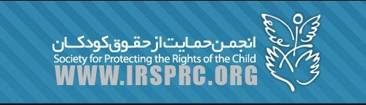

پذيرش > تریبون > گفت و گو > کودک آزاری و نقش وکلا در حمایت از کودکان آزار دیده (با مروری بر فعالیت های نسرین ستوده (...)


 کودک آزاری و نقش وکلا در حمایت از کودکان آزار دیده (با مروری بر فعالیت های نسرین ستوده در انجمن حمایت از حقوق کودکان) کودک آزاری و نقش وکلا در حمایت از کودکان آزار دیده (با مروری بر فعالیت های نسرین ستوده در انجمن حمایت از حقوق کودکان)
25 خرداد 1390 - دلارام علی - نسخه قابل چاپ
تغییر برای برابری: سازمان بهداشت جهانی(WHO) کودک آزاری (Child Abuse)را هر گونه فعل یا ترک فعل عنوان می کند که منجر به آسیب یا تهدید سلامت جسم ، روان و یا سعادت، رفاه و بهزیستی کودک به دست والدین یا افراد دیگر شود.
بر پایه این تعریف کودک آزاری را به انواع کودک آزاری جسمی(Child Abuse Physical)، کودک آزاری جنسی(Sexual Child Abuse)، کودک آزاری عاطفی(Emotional Child Abuse)، غفلت یا بی توجهی(Neglect) تقسیم بندی می کنند.در سال های اخیر موارد دیگری به این فهرست اضافه شده که از آن جمله می توان به کودک آزاری آموزشی (Educational Child Abuse )اشاره نمود.
در سال های اخیر پژوهش های متعددی در زمینه کودک آزاری در ایران انجام شده است و پژوهشگران به مطالعه مواردی نظیر شیوع و گستردگی کودک آزاری، عوامل موثر بر شکل گیری آن، مولفه های موثر بر آسیب پذیری کودکان ، نگرش جامعه نسبت به پدیده کودک آزاری، آثار و پیامدهای آن و بسیاری موارد دیگر پرداخته اند و در این زمینه آمارهایی را نیز ارائه کرده اند.این در حالیست که آمار کودک آزاری به صورت رسمی توسط هیچ نهادی ارائه نمی شود و پژوهش های مذکور تنها می توانند به ارائه آمارهایی در رابطه با مطالعات موردی خود بپردازند. با این وجود پیامدها و آثار ناگوار این پدیده بر زندگی کودکان بر کسی پوشیده نیست.
سعید مدنی پژهشگر اجتماعی در کتاب "کودک آزاری در ایران" آثار و پیامدهای کودک آزاری بر پایه تحقیقات انجام شده را به دو دسته کلی 1) آثار و پیامدهای جسمی 2) آثار و پیامدهای روانی تقسیم بندی می کند. به دلیل ارتباط زنجیره ای بین پیامدهای جسمی و روانی نمی توان این دو را کاملا از هم تفکیک و یا در هم تلفیق نمود ، اما می توان اطمینان داشت که آزار جسمی کودکان در کنار پیامدهای جسمی قطعا پیامدهای روانی را نیز در پی خواهند داشت.
با وجود فقدان آمارهای رسمی در رابطه با کودک آزاری نگاهی به رشد بی سابقه موارد گزارش شده(در رسانه ها) کودک آزاری در سه ماهه اول سال 1390 نشان می دهد که این پدیده در حال گسترش است و کودکان بسیاری در گوشه و کنار ایران قربانی این پدیده شده و از آثار و پیامدهای آن آسیب می بینند.البته باید توجه داشت آنچه در رسانه ها منعکس می شود تنها درصد اندکی از موارد حاد کودک آزاری است و سایر قربانیان این پدیده عمدتا یا آن را گزارش نمی کنند و یا گزارش های آنان به رسانه ها راه نمی یابند. در قوانین ایران به موجب ماده دوم قانون حمایت از کودکان و نوجوانان مصوب سال ۱۳۸۱: "هر نوع اذیت و آزار کودکان و نوجوانان که موجب صدمه جسمانی، روانی و اخلاقی به آنها شود و سلامت جسم و روان آنان را به مخاطره بیندازد"، ممنوع و از مصادیق کودک آزاری است . کودک آزاری در ایران جرمی عمومی محسوب می شود و نیاز به شاکی خصوصی ندارد و فرد آزارگر به موجب قانون باید مورد مجازات قرار گیرد. موسی قربانی، نماینده مجلس ایران در همین زمینه در گفت و گویی با خبرگزاری مهر گفته است : در صورتی که کودک آزاری همراه با شکستگی یا ایراد ضرب و جرح باشد، جرم خاص محسوب می شود و عامل آن طبق ماده ۶۱۴ قانون مجازات اسلامی به تحمل ۲ تا ۵ سال حبس و پرداخت دیه محکوم خواهد شد.

از سال 1381 و پس از تصویب قانون "حمایت از کودکان و نوجوانان "تعدادی از سازمان های غیر دولتی فعال در زمینه حقوق کودکان اقدام به فعالیت در زمینه پیشگیری و کاهش کودک آزاری و حمایت از کودکان آزار دیده نمودند.انجمن حمایت از حقوق کودکان اولین سازمان غیر دولتی مدافع حقوق کودکان که فعالیت خود را از سال 1373 در تهران آغاز کرد و از جمله سازمان های غیر دولتی بود که نقش به سزایی در تصویب وترویج پیمان نامه حقوق کودک داشت .این انجمن با راه اندازی دو پروژه در محلات شوش و ناصر خسرو(از محلات آسیب خیز شهر تهران) تهران و نیز خط مشاوره تلفنی صدای یارا و ارائه خدمات حقوقی و مددکاری اقدام به حمایت از کودکان در برابر انواع آسیب ها از جمله کودک آزاری کرد.
انجمن حمایت از حقوق کودکان اولین سازمان غیر دولتی بود که با تشکیل یک تیم حقوقی از وکلای داوطلب اقدام به پیگیری حقوقی موارد گزارش شده کودک آزاری نمود.یکی از اولین وکلای داوطلب این انجمن نسرین ستوده بود.
ثریا عزیر پناه از اعضای قدیمی انجمن حمایت از حقوق کودکان و عضو هیئت مدیره در خصوص سابقه فعالیت نسرین ستوده در انجمن و نحوه فعالیت او در رابطه با کودک آزاری می گوید:
"نسرین ستوده همکاری خود با انجمن را از سال 82 و با فعالیت در کمیته حقوقی انجمن آغاز کرد و به سرعت به هیئت مدیره انجمن نیز راه یافت.او در طول سال های فعالیت خود وکالت پرونده های بسیاری از کودکان آسیب دیده از کودک آزاری را بر عهده داشت و برای پیگیری این پرونده ها به شهرهای مختلفی از ایران هم سفر کرد. نسرین هیچ وقت برای قبول پرونده ها نمی پرسید این پرونده متعلق به کدام شهر است، برای او مسافت اهمیتی نداشت.نسرین رسالتی را در قبال حمایت از حقوق کودکان احساس می کرد که او را در کارش متعهد، جدی و مسئول می کرد".
یکی دیگر از اعضای باسابقه انجمن حمایت از حقوق کودک در رابطه با فعالیت های نسرین ستوده می گوید:
"درست است که نسرین وکالت پرونده کودکان آزار دیده را بر عهده داشت اما هرگز خود را تنها به فعالیت حقوقی محدود نمی کرد و برای پیگیری هر پرونده ساعت ها وقت می گذاشت و در نهایت هم در کنار خدمات حقوقی که در پرونده ها ارائه می کرد ، در حمایت های غیر حقوقی از کودکان نیز پیش قدم بود.
نسرین ستوده در سال های فعالیت خود در انجمن حمایت از حقوق کودکان وکالت پرونده های کودک آزاری بسیاری را عهده دار بوده است که یکی از جنجالی ترین آنها پرونده معروف به "بیجه" در ارتباط با آزار جنسی و به قتل رساندن بیش از 22 کودک در پاکدشت ورامین بود. نسرین ستوده خود در خصوص این پرونده گفته بود: متأسفانه دستگاه قضايى ما با اعمال منافى عفت مردان با نرمش و تأمل بسيار برخورد مى كند در حالى كه در مورد زنان خيلى قرص و محكم مى ايستد. تجاوز به نابالغ عملى است كه متأسفانه نه فقط در پاكدشت بلكه مكرراً دارد اتفاق مى افتد. تأكيد ما هم ديگر فقط روى پاكدشت نيست بلكه به حل معضل اجتماعى فراگيرى به نام آزار جنسى كودكان مى انديشيم".
اما او در کنار پیگیری های حقوقی این پرونده نگرانی های دیگری هم دارد که عمدتا معطوف به کودکان بازمانده در خانواده های قربانیان است. ستوده در یکی از مصاحبه های خود در در این زمینه اینطور گفته بود:
"خانواده هايى كه ما ملاقات كرديم اغلب بچه هاى ديگرى دارند كه از بابت آنها به شدت نگران اند. پدر محمد قديمى، يكى ازقربانيان اين جنايت تا مدت ها از رفتن بچه ديگرش به مدرسه جلوگيرى مى كرد. اين خانواده ها نگران اند و مى گويند چه تضمينى براى امنيت و سلامت بچه هاى ما وجود دارد".
پرونده بیجه شاید جنجالی ترین پرونده نسرین ستوده در رابطه با کودک آزاری بوده باشد اما همکاران او در انجمن حمایت از حقوق کودکان ، کودکان آزار دیده بسیاری را به یاد دارند که ستوده وکالت و حمایت از آنها را بر عهده داشته است. یکی از اعضای قدیمی انجمن در این خصوص می گوید:
"یادم می آید که نسرین ، وکالت پسر بچه 7ساله ای که مورد آزار جنسی پدر قرار می گرفت را پذیرفت. در آن زمان مادر کودک تقاضای طلاق کرده بود و به موجب قانون حضانت کودک باید به پدرش واگذار می شد اما پس از تلاش پیگیرانه و زحمات زیادی که نسرین کشید، توانست درزمان طلاق، کودک را تحت سرپرستی مادر قرار دهد".
همکاران نسرین ستوده در انجمن حمایت از حقوق کودکان بر این باورند که او در طول سال های فعالیت خود با مسئولیت پذیری، جدیت و تلاش بی وقفه اش نشان داد که وکلا می توانند نقش موثری در زمینه حمایت از کودکان آزار دیده بازی کنند.
عزیز پناه معتقد است که نسرین ستوده به عنوان یک وکیل در سال های فعالیت خود راهی را در زمینه حمایت از کودکان هموار کرده است که این روزها پیمودنش برای بسیاری آسان تر شده. اما نبود افرادی مثل او و فراموش کردن راهی که او در پیش گرفته بود و عدم مداخلات فعال وکلا در زمینه کودک آزاری می تواند ارزش این زحمات را از بین ببرد.
ارسال به
بالاترین
،
توییتر
،
فریندفید
،
فیسبوک
در همين بخش :
 دهمین دورۀ مراسم تندیس صدیقه دولت آبادی ۱۳۹۲ دهمین دورۀ مراسم تندیس صدیقه دولت آبادی ۱۳۹۲
کارت پستالهایی به بهانهی هشت مارس و به یاد همهی مبارزین راه برابری
بیانیه بیش از 350 تن از مدافعان حقوق زنان به مناسبت روز جهانی زن؛ زنان هر روز فرودستتر میشوند
لباسی که برای تن ما دوخته اند! /اعظم بهرامی
چالشها و چشمانداز فعالیت مدنی زنان
ديگر بخش ها :
طرح یک میلیون امضا
|
مقالات
|
سایت نوشته ها
|
اخبار
|
گزارش كمپين
|
گفت و گو
|
علیه سکوت
|
كوچه به كوچه
|
نامه های شما
|
گزارش ویژه
|
گفتگو با اعضا
|
ویژه سالگرد کمپین
|
تصویر برابری
|
دل آرام علی
|
تریبون
|
مقالات
|
تاریخ شفاهی
|
خارج از چارچوب
|
کتابخانه
|
درباره کمپین
|
کمپین در شهرها
|
کمپین در بند
|
صدای تغییر
|
ویژه 22 خرداد
|
لایحه حمایت از خانواده
|
گالری
|
عشا مومنی
|
امیر یعقوبعلی
|
خدیجه مقدم
|
راحله عسگری زاده و نسیم خسروی
|
پروین اردلان،جلوه جواهری، مریم حسین خواه، ناهید کشاورز
|
زینب پیغمبرزاده
|
سعیده امین، سارا ایمانیان، محبوبه حسین زاده، ناهید کشاورز و همایون نامی
|
احترام شادفر
|
نسیم سرابندی زاده،فاطمه دهدشتی
|
وبلاگ مهمان
|
پرونده خرم آباد
|
دستگیری ها
|
مریم مالک
|
پرستو اللهیاری
|
مهرنوش اعتمادی
|
سمیه رشیدی
|
Other Languages
|
همراهان
|
«فراخوان کمپین ده روز با بهاره هدایت»
| English
|